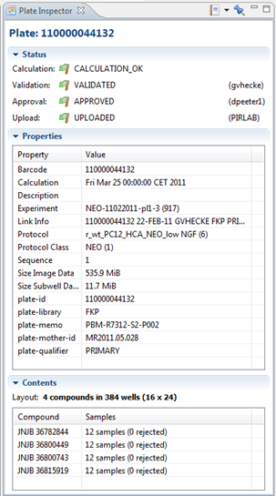

The Plate Inspector gives additional information about the currently selected plate. The information is divided into 3 categories:
- Status: The calculation, validation and approval status of the plate.
- Properties: General properties about the selected plate. If the plate is linked with a plate definition, additional properties may be shown here, such as mother id or library name.
- Contents: A list of compounds with the compound name and the number of samples (with the number of rejected samples between brackets)
To open the Plate Inspector, right-click on a plate and select Inspectors > Plate Inspector

These are the available options in this view:
| Open or create a Saved View or Report. | |
| Pin (freeze) the contents so they will no longer change when you select another plate. |